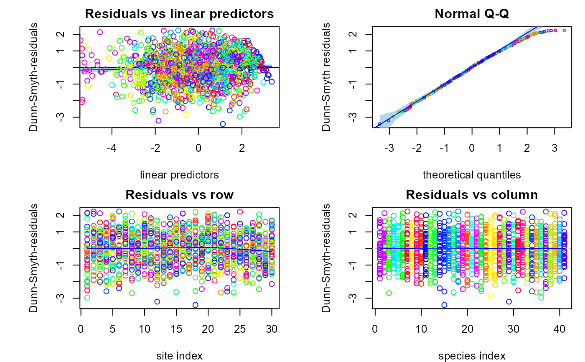
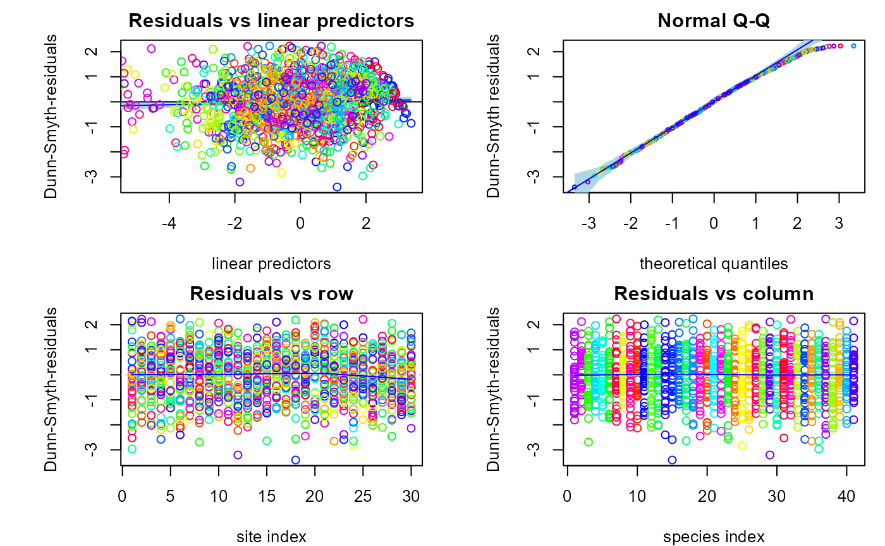
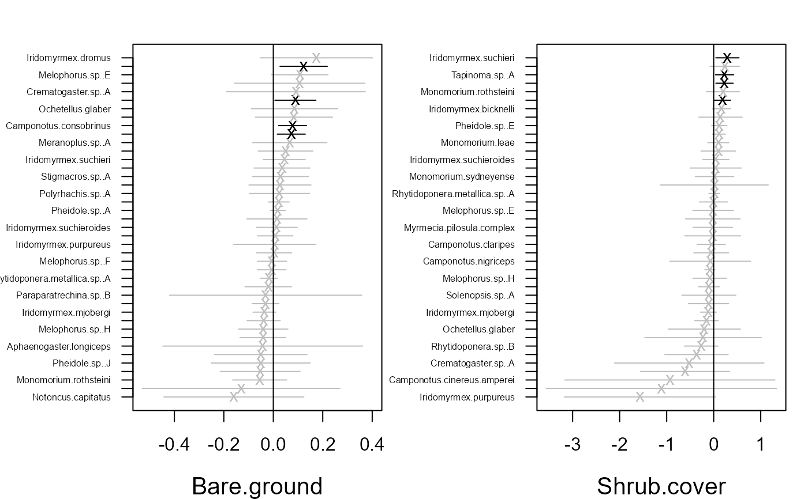
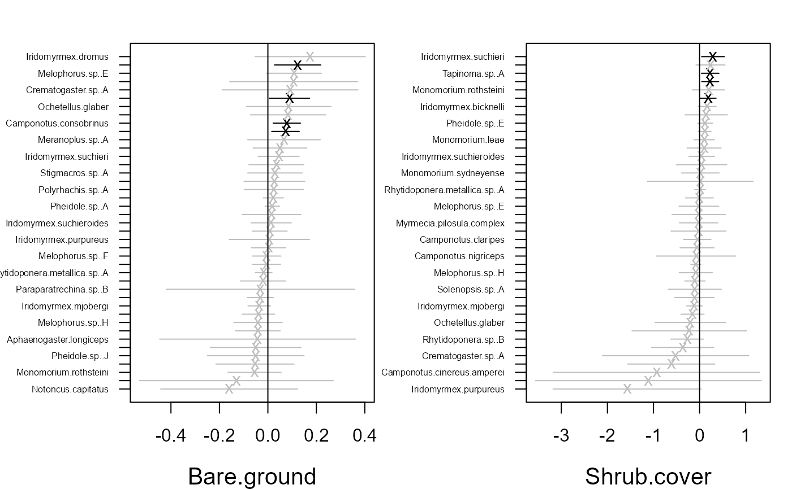

Fits generalized linear latent variable model for multivariate data. The model can be fitted using Laplace approximation method or variational approximation method.
gllvm(
y = NULL,
X = NULL,
TR = NULL,
data = NULL,
formula = NULL,
family,
num.lv = NULL,
num.lv.c = 0,
num.RR = 0,
lv.formula = NULL,
lvCor = NULL,
studyDesign = NULL,
dist = matrix(0),
corWithin = FALSE,
quadratic = FALSE,
row.eff = FALSE,
sd.errors = TRUE,
offset = NULL,
method = "VA",
randomB = FALSE,
randomX = NULL,
dependent.row = FALSE,
beta0com = FALSE,
zeta.struc = "species",
plot = FALSE,
link = "probit",
Power = 1.1,
seed = NULL,
scale.X = TRUE,
return.terms = TRUE,
gradient.check = FALSE,
disp.formula = NULL,
control = list(reltol = 1e-10, reltol.c = 1e-08, TMB = TRUE, optimizer = ifelse((num.RR
+ num.lv.c) == 0 | randomB != FALSE, "optim", "alabama"), max.iter = 4000, maxit =
4000, trace = FALSE, optim.method = NULL),
control.va = list(Lambda.struc = "unstructured", Ab.struct = "unstructured", Ar.struc =
"unstructured", diag.iter = 1, Ab.diag.iter = 0, Lambda.start = c(0.3, 0.3, 0.3), NN
= 3),
control.start = list(starting.val = "res", n.init = 1, n.init.max = 10, jitter.var = 0,
start.fit = NULL, start.lvs = NULL, randomX.start = "zero", quad.start = 0.01,
start.struc = "LV", scalmax = 10, MaternKappa = 1.5),
setMap = NULL,
...
)Arguments
- y
(n x m) matrix of responses.
- X
matrix or data.frame of environmental covariates.
- TR
matrix or data.frame of trait covariates.
- data
data in long format, that is, matrix of responses, environmental and trait covariates and row index named as "id". When used, model needs to be defined using formula. This is alternative data input for y, X and TR.
- formula
an object of class "formula" (or one that can be coerced to that class): a symbolic description of the model to be fitted (for fixed-effects predictors).
- family
distribution function for responses. Options are
"negative.binomial"(with log link),poisson(link = "log"),binomial(link = "probit")(and also withlink = "logit"whenmethod = "LA"ormethod = "EVA"), zero inflated poisson ("ZIP"),gaussian(link = "identity"), Tweedie ("tweedie") (with log link, for"LA"and"EVA"-method),"gamma"(with log link),"exponential"(with log link), beta ("beta") (with logit and probit link, for"LA"and"EVA"-method) and"ordinal"(only with"VA"-method).- num.lv
number of latent variables, d, in gllvm model. Non-negative integer, less than number of response variables (m). Defaults to 2, if
num.lv.c=0andnum.RR=0, otherwise 0.- num.lv.c
number of latent variables, d, in gllvm model to constrain, with residual term. Non-negative integer, less than number of response (m) and equal to, or less than, the number of predictor variables (k). Defaults to 0. Requires specification of "lv.formula" in combination with "X" or "datayx". Can be used in combination with num.lv and fixed-effects, but not with traits.
- num.RR
number of latent variables, d, in gllvm model to constrain, without residual term (reduced rank regression). Cannot yet be combined with traits.
- lv.formula
an object of class "formula" (or one that can be coerced to that class): a symbolic description of the model to be fitted (for latent variables).
- lvCor
(Under development, not to be used at the moment!) correlation structure for latent variables, defaults to
NULLCorrelation structure for latent variables can be defined via formula, eg.~struc(1|groups), where option to 'struc' arecorAR1(AR(1) covariance),corExp(exponentially decaying, see argument 'dist') andcorCS(compound symmetry). The grouping variable needs to be included either in 'X' or 'studyDesign'. Works at the moment only with unconstrained ordination without quadratic term.- studyDesign
variables related to eg. sampling/study design, used for defining correlation structure of the latent variables and row effects.
- dist
matrix of coordinates or time points used for row parameters correlation structure
corExp.- corWithin
logical. If
TRUE, correlation is set between row effects of the observation units within group. Correlation and groups can be defined usingrow.eff. Defaults toFALSE, when correlation is set for row parameters between groups.- quadratic
either
FALSE(default),TRUE, orLV. IfFALSEmodels species responses as a linear function of the latent variables. IfTRUEmodels species responses as a quadratic function of the latent variables. IfLVassumes species all have the same quadratic coefficient per latent variable.- row.eff
FALSE,fixed,"random"or formula to define the structure for the row parameters. Indicating whether row effects are included in the model as a fixed or as a random effects. Defaults toFALSEwhen row effects are not included. Structured random row effects can be defined via formula, eg.~(1|groups), when unique row effects are set for each group, not for all rows, the grouping variable needs to be included inX. Correlation structure between random group effects/intercepts can also be set using~struc(1|groups), where option to 'struc' arecorAR1(AR(1) covariance),corExp(exponentially decaying, see argument 'dist') andcorCS(compound symmetry). Correlation structure can be set between or within groups, see argument 'corWithin'.- sd.errors
logical. If
TRUE(default) standard errors for parameter estimates are calculated.- offset
vector or matrix of offset terms.
- method
model can be fitted using Laplace approximation method (
method = "LA") or variational approximation method (method = "VA"), or with extended variational approximation method (method = "EVA") when VA is not applicable. If particular model has not been implemented using the selected method, model is fitted using the alternative method as a default. Defaults to"VA".- randomB
either
FALSE(default), "LV", "P", or "single". Fits concurrent or constrained ordination (i.e. models with num.lv.c or num.RR) with random slopes for the predictors. "LV" assumes LV-specific variance parameters, "P" predictor specific, and "single" the same across LVs and predictors.- randomX
formula for species specific random effects of environmental variables in fourth corner model. Defaults to
NULL, when random slopes are not included.- dependent.row
logical. Whether or not random row effects are correlated (dependent) with the latent variables. Defaults to
FALSEwhen correlation terms are not included.- beta0com
logical. If
FALSEcolumn-specific intercepts are assumed. IfTRUE, a common intercept is used which is allowed only for fourth corner models.- zeta.struc
structure for cut-offs in the ordinal model. Either "common", for the same cut-offs for all species, or "species" for species-specific cut-offs. For the latter, classes are arbitrary per species, each category per species needs to have at least one observations. Defaults to "species".
- plot
logical. If
TRUEordination plots will be printed in each iteration step whenTMB = FALSE. Defaults toFALSE.- link
link function for binomial family if
method = "LA"and beta family. Options are "logit" and "probit.- Power
fixed power parameter in Tweedie model. Scalar from interval (1,2). Defaults to 1.1.
- seed
a single seed value, defaults to
NULL.- scale.X
logical. If
TRUE, covariates are scaled when fourth corner model is fitted.- return.terms
logical. If
TRUE'terms' object is returned.- gradient.check
logical. If
TRUEgradients are checked for large values (>0.01) even if the optimization algorithm did converge.- disp.formula
formula, or alternatively a vector of indices, for the grouping of dispersion parameters (e.g. in a negative-binomial distribution). Defaults to NULL so that all species have their own dispersion parameter. Is only allowed to include categorical variables. If a formula, data should be included as named rows in y.
- control
A list with the following arguments controlling the optimization:
reltol: convergence criteria for log-likelihood, defaults to 1e-8.
reltol.c: convergence criteria for equality constraints in ordination with predictors, defaults to 1e-8.
TMB: logical, if
TRUEmodel will be fitted using Template Model Builder (TMB). TMB is always used ifmethod = "LA". Defaults toTRUE.optimizer: if
TMB=TRUE, log-likelihood can be optimized using"optim"(default) or"nlminb". For ordination with predictors (num.RR>0 or num.lv.c>0) this can additionally be one ofalabama(default),nloptr(agl)ornloptr(sqp).max.iter: maximum number of iterations when
TMB = FALSEor foroptimizer = "nlminb"whenTMB = TRUE, defaults to 4000.maxit: maximum number of iterations for optimizer, defaults to 4000.
trace: logical, if
TRUEin each iteration step information on current step will be printed. Defaults toFALSE. Only withTMB = FALSE.optim.method: optimization method to be used if optimizer is
"optim","alabama", or"nloptr", but the latter two are only available in combination with at least two latent variables (i.e., num.RR+num.lv.c>1). Defaults to"BFGS", but to"L-BFGS-B"for Tweedie family due the limited-memory use. For optimizer='alabama' this can be any"optim"method, or"nlminb". If optimizer = 'nloptr(agl)' this can be one of: "NLOPT_LD_CCSAQ", "NLOPT_LD_SLSQP", "NLOPT_LD_TNEWTON_PRECOND" (default), "NLOPT_LD_TNEWTON", "NLOPT_LD_MMA".
- control.va
A list with the following arguments controlling the variational approximation method:
Lambda.struc: covariance structure of VA distributions for latent variables when
method = "VA", "unstructured" or "diagonal".Ab.struct: covariance structure of VA distributions for random slopes when
method = "VA", "unstructured" or "diagonal".diag.iter: non-negative integer which can sometimes be used to speed up the updating of variational (covariance) parameters in VA method. Can sometimes improve the accuracy. If
TMB = TRUEeither 0 or 1. Defaults to 1.Ab.diag.iter: As above, but for variational covariance of random slopes.
Lambda.start: starting values for variances in VA distributions for latent variables, random row effects and random slopes in variational approximation method. Defaults to 0.3.
NN: Number of nearest neighbors for NN variational covariance. Defaults to ...
- control.start
A list with the following arguments controlling the starting values:
starting.val: starting values can be generated by fitting model without latent variables, and applying factorial analysis to residuals to get starting values for latent variables and their coefficients (
starting.val = "res"). Another options are to use zeros as a starting values (starting.val = "zero") or initialize starting values for latent variables with (n x num.lv) matrix. Defaults to"res", which is recommended.n.init: number of initial runs. Uses multiple runs and picks up the one giving highest log-likelihood value. Defaults to 1.
n.init.max: maximum number of refits try try for n.init without improvement, defaults to 10.
start.fit: object of class 'gllvm' which can be given as starting parameters for count data (poisson, NB, or ZIP).
start.lvs: initialize starting values for latent variables with (n x num.lv) matrix. Defaults to
NULL.jitter.var: jitter variance for starting values of latent variables. Defaults to 0, meaning no jittering.
randomX.start: starting value method for the random slopes. Options are
"zero"and"res". Defaults to"zero".start.struc: starting value method for the quadratic term. Options are
"LV"(default) and"all".quad.start: starting values for quadratic coefficients. Defaults to 0.01.
MaternKappa: Starting value for smoothness parameter kappa of Matern covariance function. Defaults to 3/2.
scalmax: Sets starting value for the range/scale parameter for the coordinates. Defaults to 10, when the starting value for scale parameter scales the coordinates between 0-10.
- setMap
UNDER DEVELOPMENT, DO NOT USE! list of a set of parameters to be fixed
- ...
Not used.
Value
An object of class "gllvm" includes the following components:
- call
function call
- y
(n x m) matrix of responses.
- X
matrix or data.frame of environmental covariates.
- lv.X
matrix or data.frame of environmental covariates for latent variables.
- TR
Trait matrix
- formula
Formula for predictors
- lv.formula
Formula of latent variables in constrained and concurrent ordination
- randomX
Formula for species specific random effects in fourth corner model
- randomB
Boolean flag for random slopes in constrained and concurrent ordination
- num.lv
Number of unconstrained latent variables
- num.lv.c
Number of latent variables in concurrent ordination
- num.RR
Number of latent variables in constrained ordination
- method
Method used for integration
- family
Response distribution
- row.eff
Type of row effect used
- n.init
Number of model runs for best fit
- disp.group
Groups for dispersion parameters
- sd
List of standard errors
- lvs
Latent variables
- params
List of parameters
theta latent variables' loadings relative to the diagonal entries of loading matrix
sigma.lv diagonal entries of latent variables' loading matrix
LvXcoef Predictor coefficients (or predictions for random slopes) related to latent variables, i.e. canonical coefficients
beta0 column specific intercepts
Xcoef coefficients related to environmental covariates X
B coefficients in fourth corner model
row.params row-specific intercepts
phi dispersion parameters \(\phi\) for negative binomial or Tweedie family, probability of zero inflation for ZIP family, standard deviation for gaussian family or shape parameter for gamma/beta family
inv.phi dispersion parameters \(1/\phi\) for negative binomial
- Power
power parameter \(\nu\) for Tweedie family
- sd
list of standard errors of parameters
- prediction.errors
list of prediction covariances for latent variables and variances for random row effects when method
"LA"is used- A, Ar, Ab_lv
covariance matrices for variational densities of latent variables, random row effects, and random slopes respectively
- seed
Seed used for calculating starting values
- TMBfn
TMB objective and derivative functions
- logL
log likelihood
- convergence
convergence code of optimizer
- quadratic
flag for quadratic model
- Hess
List holding matrices of second derivatives
- beta0com
Flag for common intercept in fourth corner models
- rstruc
Integer that indicates which type of row structure is included
- cstruc
Correlation structure for row effects
- dist
Matrix of coordinates or time points used for row effects
- terms
Terms object for main predictors
- start
starting values for model
- optim.method
Optimization method when using 'optim', 'alabama', or 'nloptr'
Details
Fits generalized linear latent variable models as in Hui et al. (2015 and 2017) and Niku et al. (2017). Method can be used with two types of latent variable models depending on covariates. If only site related environmental covariates are used, the expectation of response \(Y_{ij}\) is determined by
$$g(\mu_{ij}) = \eta_{ij} = \alpha_i + \beta_{0j} + x_i'\beta_j + u_i'\theta_j,$$
where \(g(.)\) is a known link function, \(u_i\) are \(d\)-variate latent variables (\(d\)<<\(m\)), \(\alpha_i\) is an optional row effect at site \(i\), and it can be fixed or random effect (also other structures are possible, see below), \(\beta_{0j}\) is an intercept term for species \(j\), \(\beta_j\) and \(\theta_j\) are column specific coefficients related to covariates and the latent variables, respectively.
Quadratic model
Alternatively, a more complex version of the model can be fitted with quadratic = TRUE, where species are modeled as a quadratic function of the latent variables:
$$g(\mu_{ij}) = \eta_{ij} = \alpha_i + \beta_{0j} + x_i'\beta_j + u_i'\theta_j - u_i' D_j u_i$$.
Here, D_j is a diagonal matrix of positive only quadratic coefficients, so that the model generates concave shapes only. This implementation follows
the ecological theoretical model where species are generally recognized to exhibit non-linear response curves.
For a model with quadratic responses, quadratic coefficients are assumed to be the same for all species: $$D_j = D$$. This model requires less information
per species and can be expected to be more applicable to most datasets. The quadratic coefficients D can be used to calculate the length of
ecological gradients.
For quadratic responses, it can be useful to provide the latent variables estimated with a GLLVM with linear responses, or estimated with (Detrended) Correspondence Analysis.
The latent variables can then be passed to the start.lvs argument inside the control.start list, which in many cases gives good results.
Ordination with predictors
For GLLVMs with both linear and quadratic response model, a series of predictors \(x_lv\) can be included to explain the latent variables:
$$g(\mu_{ij}) = \alpha_i + \beta_{0j} + x_i'\beta_j + (B' x_{lv,i} + \epsilon_i)' \gamma_j - (B' x_{lv,i})' D_j (B' x_{lv,i} + \epsilon_i) ,$$ where \(z_i = B' x_{lv,i} + \epsilon_i\) are latent variables informed by the predictors, but not constrained compared to unconstrained ordination as in methods such as CCA or RDA. Omitting the predictors results in an unconstrained ordination, and omitting \(\epsilon_i\) in the usual constrained ordination, which can also be fitted.
Fourth corner model
An alternative model is the fourth corner model (Brown et al., 2014, Warton et al., 2015) which will be fitted if also trait covariates are included. The expectation of response \(Y_{ij}\) is
$$g(\mu_{ij}) = \alpha_i + \beta_{0j} + x_i'(\beta_x + b_j) + TR_j'\beta_t + vec(B)*kronecker(TR_j,X_i) + u_i'\theta_j - u_i'D_ju_i$$
where g(.), \(u_i\), \(\beta_{0j}\) and \(\theta_j\) are defined as above. Vectors \(\beta_x\) and \(\beta_t\) are the main effects or coefficients related to environmental and trait covariates, respectively, matrix \(B\) includes interaction terms. Vectors \(b_j\) are optional species-specific random slopes for environmental covariates. The interaction/fourth corner terms are optional as well as are the main effects of trait covariates.
Structured row effects
In addition to the site-specific random effects, \(\alpha_i\), it is also possible to set arbitrary structure/design for the row effects.
That is, assume that observations / rows \(i=1,...,n\) in the data matrix are from groups \(t=1,...,T\), so that each row \(i\) belongs to one of the groups, denote \(G(i) \in \{1,...,T\}\). Each group \(t\) has a number of observations \(n_t\), so that \(\sum_{t=1}^{T} n_t =n\).
Now we can set random intercept for each group \(t\), (see argument 'row.eff'):
$$g(\mu_{ij}) = \eta_{ij} = \alpha_{G(i)} + \beta_{0j} + x_i'\beta_j + u_i'\theta_j,$$
There is also a possibility to set correlation structure for the random intercepts between groups, so that \((\alpha_{1},...,\alpha_{T})^\top \sim N(0, \Sigma_r)\). That might be the case, for example, when the groups are spatially or temporally dependent.
Another option is to set row specific random intercepts \(\alpha_i\), but to set the correlation structure for the observations within groups, (see argument 'corWithin'). That is, we can set \(corr(\alpha_{i},\alpha_{i'}) = C(i,i') \neq 0\) according to some correlation function \(C\), when \(G(i)=G(i')\).
This model is restricted to the case, where each group has equal number of observations (rows), that is \(n_t=n_{t'}\) for all \(t,t' \in \{1,...,T\}\).
The correlation structures available in the package are
corAR1autoregressive process of order 1.corExpexponentially decaying, see argument 'dist'.corCScompound symmetry.
Starting values
The method is sensitive for the choices of initial values of the latent variables. Therefore it is
recommendable to use multiple runs and pick up the one giving the highest log-likelihood value (see argument 'n.init').
However, sometimes this is computationally too demanding, and default option
starting.val = "res" is recommended. For more details on different starting value methods, see Niku et al., (2018).
Models are implemented using TMB (Kristensen et al., 2015) applied to variational approximation (Hui et al., 2017), extended variational approximation (Korhonen et al., 2021) and Laplace approximation (Niku et al., 2017).
With ordinal family response classes must start from 0 or 1.
Distributions
Mean and variance for distributions are defined as follows.
For count data
family = poisson(): Expectation \(E[Y_{ij}] = \mu_{ij}\), variance \(V(\mu_{ij}) = \mu_{ij}\), orfamily = "negative.binomial": Expectation \(E[Y_{ij}] = \mu_{ij}\), variance \(V(\mu_{ij}) = \mu_{ij}+\mu_{ij}^2\phi_j\), orfamily = "ZIP": Expectation \(E[Y_{ij}] = (1-p)\mu_{ij}\), variance \(V(\mu_{ij}) = \mu_{ij}(1-p)(1+\mu_{ij}p)\).For binary data
family = binomial(): Expectation \(E[Y_{ij}] = \mu_{ij}\), variance \(V(\mu_{ij}) = \mu_{ij}(1-\mu_{ij})\).For percent cover data \(0 < Y_{ij} < 1\)
family = "beta": Expectation \(E[Y_{ij}] = \mu_{ij}\), variance \(V(\mu_{ij}) = \mu_{ij}(1-\mu_{ij})//(1+\phi_j)\).For positive continuous data
family = "gamma":Expectation \(E[Y_{ij}] = \mu_{ij}\), variance \(V(\mu_{ij}) = \mu_{ij}^2/\phi_j\), where \(\phi_j\) is species specific shape parameter.For non-negative continuous data
family = "exponential":Expectation \(E[Y_{ij}] = \mu_{ij}\), variance \(V(\mu_{ij}) = \mu_{ij}^2\).For non-negative continuous or biomass data
family = "tweedie"Expectation \(E[Y_{ij}] = \mu_{ij}\), variance \(V(\mu_{ij}) = \phi_j*\mu_{ij}^\nu\), where \(\nu\) is a power parameter of Tweedie distribution. See details Dunn and Smyth (2005).For ordinal data
family = "ordinal": Cumulative probit model, see Hui et.al. (2016).For normal distributed data
family = gaussian(): Expectation \(E[Y_{ij}] = \mu_{ij}\), variance \(V(y_{ij}) = \phi_j^2.\)
Note
If function gives warning: 'In f(x, order = 0) : value out of range in 'lgamma'', optimizer have visited an area where gradients become too big. It is automatically fixed by trying another step in the optimization process, and can be ignored if errors do not occur.
References
Brown, A. M., Warton, D. I., Andrew, N. R., Binns, M., Cassis, G., and Gibb, H. (2014). The fourth-corner solution - using predictive models to understand how species traits interact with the environment. Methods in Ecology and Evolution, 5:344-352.
Dunn, P. K. and Smyth, G. K. (2005). Series evaluation of tweedie exponential dispersion model densities. Statistics and Computing, 15:267-280.
Hui, F. K. C., Taskinen, S., Pledger, S., Foster, S. D., and Warton, D. I. (2015). Model-based approaches to unconstrained ordination. Methods in Ecology and Evolution, 6:399-411.
Hui, F. K. C., Warton, D., Ormerod, J., Haapaniemi, V., and Taskinen, S. (2017). Variational approximations for generalized linear latent variable models. Journal of Computational and Graphical Statistics. Journal of Computational and Graphical Statistics, 26:35-43.
Kasper Kristensen, Anders Nielsen, Casper W. Berg, Hans Skaug, Bradley M. Bell (2016). TMB: Automatic Differentiation and Laplace Approximation. Journal of Statistical Software, 70(5), 1-21.
Korhonen, P., Hui, F. K. C., Niku, J., and Taskinen, S. (2021). Fast, universal estimation of latent variable models using extended variational approximations. Submitted.
Niku, J., Warton, D. I., Hui, F. K. C., and Taskinen, S. (2017). Generalized linear latent variable models for multivariate count and biomass data in ecology. Journal of Agricultural, Biological, and Environmental Statistics, 22:498-522.
Niku, J., Brooks, W., Herliansyah, R., Hui, F. K. C., Taskinen, S., and Warton, D. I. (2018). Efficient estimation of generalized linear latent variable models. PLoS One, 14(5):1-20.
Warton, D. I., Guillaume Blanchet, F., O'Hara, R. B., Ovaskainen, O., Taskinen, S., Walker, S. C. and Hui, F. K. C. (2015). So many variables: Joint modeling in community ecology. Trends in Ecology & Evolution, 30:766-779.
See also
Examples
# Extract subset of the microbial data to be used as an example
data(microbialdata)
X <- microbialdata$Xenv
y <- microbialdata$Y[, order(colMeans(microbialdata$Y > 0),
decreasing = TRUE)[21:40]]
fit <- gllvm(y, X, formula = ~ pH + Phosp, family = poisson())
fit$logL
#> [1] -4012.184
ordiplot(fit)
 coefplot(fit)
coefplot(fit)
 # \donttest{
# Inclusion of structured random row effect
sDesign<-data.frame(Site = microbialdata$Xenv$Site)
fit <- gllvm(y, X, formula = ~ pH + Phosp, family = poisson(),
studyDesign=sDesign, row.eff=~(1|Site))
## Load a dataset from the mvabund package
library(mvabund)
data(antTraits)
y <- as.matrix(antTraits$abund)
X <- as.matrix(antTraits$env)
TR <- antTraits$traits
# Fit model with environmental covariates Bare.ground and Shrub.cover
fit <- gllvm(y, X, formula = ~ Bare.ground + Shrub.cover,
family = poisson())
ordiplot(fit)
coefplot(fit)
# \donttest{
# Inclusion of structured random row effect
sDesign<-data.frame(Site = microbialdata$Xenv$Site)
fit <- gllvm(y, X, formula = ~ pH + Phosp, family = poisson(),
studyDesign=sDesign, row.eff=~(1|Site))
## Load a dataset from the mvabund package
library(mvabund)
data(antTraits)
y <- as.matrix(antTraits$abund)
X <- as.matrix(antTraits$env)
TR <- antTraits$traits
# Fit model with environmental covariates Bare.ground and Shrub.cover
fit <- gllvm(y, X, formula = ~ Bare.ground + Shrub.cover,
family = poisson())
ordiplot(fit)
coefplot(fit)
 ## Example 1: Fit model with two unconstrained latent variables
# Using variational approximation:
fitv0 <- gllvm(y, family = "negative.binomial", method = "VA")
ordiplot(fitv0)
plot(fitv0, mfrow = c(2,2))
## Example 1: Fit model with two unconstrained latent variables
# Using variational approximation:
fitv0 <- gllvm(y, family = "negative.binomial", method = "VA")
ordiplot(fitv0)
plot(fitv0, mfrow = c(2,2))
 
summary(fitv0)
#>
#> Call:
#> gllvm(y = y, family = "negative.binomial", method = "VA")
#>
#> Family: negative.binomial
#>
#> AIC: 4056.17 AICc: 4106.324 BIC: 4889.878 LL: -1865.1 df: 163
#>
#> Informed LVs: 0
#> Constrained LVs: 0
#> Unconstrained LVs: 2
#>
#> Formula: ~ 1
#> LV formula: ~ 0
confint(fitv0)
#> 2.5 % 97.5 %
#> theta.LV1.1 -0.103402980 1.85209471
#> theta.LV1.2 1.079390136 4.48661491
#> theta.LV1.3 1.000000000 1.00000000
#> theta.LV1.4 -3.379422295 3.62595070
#> theta.LV1.5 -1.025008632 2.94427132
#> theta.LV1.6 -0.680114853 1.55135267
#> theta.LV1.7 -0.460504040 2.15554108
#> theta.LV1.8 -2.598759821 1.44251518
#> theta.LV1.9 -0.925156631 2.07074861
#> theta.LV1.10 -6.330042006 1.22346719
#> theta.LV1.11 -1.596799409 5.82131884
#> theta.LV1.12 -0.558999059 0.96186360
#> theta.LV1.13 -0.996498330 1.38189846
#> theta.LV1.14 -0.701998735 2.72666242
#> theta.LV1.15 -1.199375887 0.16129878
#> theta.LV1.16 -1.113193570 4.02103912
#> theta.LV1.17 -1.111807089 0.73438881
#> theta.LV1.18 -0.653702645 1.48928169
#> theta.LV1.19 -1.786913961 0.71772167
#> theta.LV1.20 -0.929285742 1.19702793
#> theta.LV1.21 -1.537465674 0.27177114
#> theta.LV1.22 -2.294953626 0.40783190
#> theta.LV1.23 -3.206166143 1.07799836
#> theta.LV1.24 -0.369266020 1.80942316
#> theta.LV1.25 -3.337895668 1.20608250
#> theta.LV1.26 -2.428403704 0.63909824
#> theta.LV1.27 -1.106519074 1.40692222
#> theta.LV1.28 -1.364340574 4.41838881
#> theta.LV1.29 -2.056345947 0.22273149
#> theta.LV1.30 -2.568657094 0.76612817
#> theta.LV1.31 -3.333724639 1.97963577
#> theta.LV1.32 -4.795738669 1.56302890
#> theta.LV1.33 -1.016328098 0.15474535
#> theta.LV1.34 -1.695070660 1.09685446
#> theta.LV1.35 -0.211673812 1.10215683
#> theta.LV1.36 -1.669777851 1.01392644
#> theta.LV1.37 -0.597232002 1.33888004
#> theta.LV1.38 -0.988171051 0.19280571
#> theta.LV1.39 -2.776950908 0.49048366
#> theta.LV1.40 -1.880887153 0.67554519
#> theta.LV1.41 -0.524963966 2.41543700
#> theta.LV2.1 -0.374854967 1.19501151
#> theta.LV2.2 -2.481864379 0.61506892
#> theta.LV2.3 0.000000000 0.00000000
#> theta.LV2.4 1.000000000 1.00000000
#> theta.LV2.5 -0.245282502 0.60985168
#> theta.LV2.6 -0.058102889 0.36367605
#> theta.LV2.7 -0.652064409 0.04135081
#> theta.LV2.8 -0.107750146 0.67630191
#> theta.LV2.9 -0.151880858 0.42728089
#> theta.LV2.10 -1.417893694 0.76104774
#> theta.LV2.11 -0.322576823 1.41237197
#> theta.LV2.12 -0.392872691 -0.01051717
#> theta.LV2.13 -0.634629512 -0.10044290
#> theta.LV2.14 -0.503773257 0.43427315
#> theta.LV2.15 -0.161918860 0.20511840
#> theta.LV2.16 -0.222045268 0.87898796
#> theta.LV2.17 -0.471089023 -0.09686049
#> theta.LV2.18 -0.556085282 0.01519299
#> theta.LV2.19 -0.631730090 0.04549073
#> theta.LV2.20 -0.483940962 0.17680169
#> theta.LV2.21 -0.364008288 0.10592356
#> theta.LV2.22 -0.512858745 0.19539402
#> theta.LV2.23 -0.932525769 0.21015192
#> theta.LV2.24 -0.116329565 0.37738204
#> theta.LV2.25 -1.114257011 -0.04363455
#> theta.LV2.26 -0.696858651 0.13944219
#> theta.LV2.27 -0.721248429 0.18280806
#> theta.LV2.28 -0.423291133 0.70856138
#> theta.LV2.29 -0.373191768 0.22476573
#> theta.LV2.30 -0.756379036 0.04834274
#> theta.LV2.31 -1.545301412 0.10748053
#> theta.LV2.32 -0.308190479 0.93105815
#> theta.LV2.33 -0.211209702 0.07114561
#> theta.LV2.34 -0.014516526 0.58036466
#> theta.LV2.35 -0.254181170 0.10729438
#> theta.LV2.36 -0.289206699 0.68832197
#> theta.LV2.37 -0.263563276 0.21021287
#> theta.LV2.38 -0.242052939 0.03958539
#> theta.LV2.39 -0.621802684 0.17297255
#> theta.LV2.40 -0.301122241 0.46366339
#> theta.LV2.41 -0.299619108 0.35766324
#> sigma.LV1 -0.362692213 0.04900734
#> sigma.LV2 -0.709728813 0.06393158
#> Intercept.Amblyopone.australis -1.854130375 -0.03146858
#> Intercept.Aphaenogaster.longiceps -6.254061763 -0.31855900
#> Intercept.Camponotus.cinereus.amperei -3.697224995 -0.83558987
#> Intercept.Camponotus.claripes -0.036318061 1.06033485
#> Intercept.Camponotus.consobrinus 0.642062961 1.79314437
#> Intercept.Camponotus.nigriceps -1.679423524 0.47989181
#> Intercept.Camponotus.nigroaeneus -1.317217573 0.23418832
#> Intercept.Cardiocondyla.nuda.atalanta -5.332810860 -0.01410368
#> Intercept.Crematogaster.sp..A -4.739923617 0.10305160
#> Intercept.Heteroponera.sp..A 0.802084665 1.67639321
#> Intercept.Iridomyrmex.bicknelli 0.772258917 1.80399705
#> Intercept.Iridomyrmex.dromus -1.858703912 0.26234784
#> Intercept.Iridomyrmex.mjobergi 0.981649320 1.68323139
#> Intercept.Iridomyrmex.purpureus -1.286991396 1.11354437
#> Intercept.Iridomyrmex.rufoniger 2.021575806 2.70256295
#> Intercept.Iridomyrmex.suchieri -0.135376505 1.04238328
#> Intercept.Iridomyrmex.suchieroides -1.136086519 0.24755192
#> Intercept.Melophorus.sp..E -2.009286928 -0.37474358
#> Intercept.Melophorus.sp..F 0.082321961 0.98209174
#> Intercept.Melophorus.sp..H -1.273630762 0.15972237
#> Intercept.Meranoplus.sp..A -1.455510711 0.64781264
#> Intercept.Monomorium.leae 0.841792459 1.84761393
#> Intercept.Monomorium.rothsteini -0.732314216 1.20870408
#> Intercept.Monomorium.sydneyense -1.321301583 0.40682771
#> Intercept.Myrmecia.pilosula.complex -2.053797233 -0.20212910
#> Intercept.Notoncus.capitatus -2.472676330 0.53497723
#> Intercept.Notoncus.ectatommoides 0.238812787 1.22210879
#> Intercept.Nylanderia.sp..A 0.029654837 1.46945955
#> Intercept.Ochetellus.glaber -3.867024399 -0.21668080
#> Intercept.Paraparatrechina.sp..B -3.311622783 0.27491158
#> Intercept.Pheidole.sp..A 2.092275230 2.54352830
#> Intercept.Pheidole.sp..B -2.030025100 -0.15315592
#> Intercept.Pheidole.sp..E 1.226607907 1.97949317
#> Intercept.Pheidole.sp..J -2.978045558 -0.56709019
#> Intercept.Polyrhachis.sp..A -1.984380730 -0.52863578
#> Intercept.Rhytidoponera.metallica.sp..A 1.772500862 2.27327756
#> Intercept.Rhytidoponera.sp..B -0.397726458 1.09367602
#> Intercept.Solenopsis.sp..A -3.427244508 -0.97581865
#> Intercept.Stigmacros.sp..A -1.091136527 0.51312534
#> Intercept.Tapinoma.sp..A 0.282474676 1.23734074
#> Intercept.Tetramorium.sp..A -0.632363820 0.77823989
#> inv.phi.Amblyopone.australis -0.270628342 1.34913110
#> inv.phi.Aphaenogaster.longiceps -0.211390715 1.00820996
#> inv.phi.Camponotus.cinereus.amperei -1.083963833 2.59055084
#> inv.phi.Camponotus.claripes 0.057455544 1.51941020
#> inv.phi.Camponotus.consobrinus 0.052951692 3.83190609
#> inv.phi.Camponotus.nigriceps -0.061322921 0.51813191
#> inv.phi.Camponotus.nigroaeneus -0.106605989 1.07140704
#> inv.phi.Cardiocondyla.nuda.atalanta -0.070027937 0.42283510
#> inv.phi.Crematogaster.sp..A -0.079418142 0.52849709
#> inv.phi.Heteroponera.sp..A 0.225128519 2.46914685
#> inv.phi.Iridomyrmex.bicknelli -0.118360071 5.03127043
#> inv.phi.Iridomyrmex.dromus -0.066758874 0.56596797
#> inv.phi.Iridomyrmex.mjobergi -0.170243782 4.83911946
#> inv.phi.Iridomyrmex.purpureus 0.009088981 0.42277825
#> inv.phi.Iridomyrmex.rufoniger -0.083946135 19.14122092
#> inv.phi.Iridomyrmex.suchieri -0.154662398 2.35759552
#> inv.phi.Iridomyrmex.suchieroides -0.884267680 4.74589941
#> inv.phi.Melophorus.sp..E -0.832125944 2.32020924
#> inv.phi.Melophorus.sp..F -0.512500561 5.30111123
#> inv.phi.Melophorus.sp..H -0.424271869 3.55633191
#> inv.phi.Meranoplus.sp..A -0.018463930 0.63755791
#> inv.phi.Monomorium.leae 0.248442947 1.69123759
#> inv.phi.Monomorium.rothsteini 0.014799748 2.74653276
#> inv.phi.Monomorium.sydneyense -0.099539892 1.27892096
#> inv.phi.Myrmecia.pilosula.complex -0.365780338 1.37931308
#> inv.phi.Notoncus.capitatus -0.041823964 0.38604889
#> inv.phi.Notoncus.ectatommoides -0.084226317 4.06991524
#> inv.phi.Nylanderia.sp..A 0.107361852 1.41119666
#> inv.phi.Ochetellus.glaber -0.188663348 1.06096635
#> inv.phi.Paraparatrechina.sp..B -0.063992215 0.30186155
#> inv.phi.Pheidole.sp..A -1.417082010 20.56666906
#> inv.phi.Pheidole.sp..B -0.348509058 1.33685563
#> inv.phi.Pheidole.sp..E 0.320683579 2.69279916
#> inv.phi.Pheidole.sp..J -0.276764070 0.79870257
#> inv.phi.Polyrhachis.sp..A -7.666852134 15.05228224
#> inv.phi.Rhytidoponera.metallica.sp..A -0.858504369 15.09456969
#> inv.phi.Rhytidoponera.sp..B 0.003913888 1.35248291
#> inv.phi.Solenopsis.sp..A -1.919015324 4.16967260
#> inv.phi.Stigmacros.sp..A -0.028705407 1.05040362
#> inv.phi.Tapinoma.sp..A 0.106426058 2.27928779
#> inv.phi.Tetramorium.sp..A -0.300539168 3.63488768
## Example 1a: Fit concurrent ordination model with two latent variables and with
# quadratic response model
# We scale and centre the predictors to improve convergence
fity1 <- gllvm(y, X = scale(X), family = "negative.binomial",
num.lv.c=2, method="VA")
ordiplot(fity1, biplot = TRUE)
# Using Laplace approximation: (this line may take about 30 sec to run)
fitl0 <- gllvm(y, family = "negative.binomial", method = "LA")
ordiplot(fitl0)
# Poisson family:
fit.p <- gllvm(y, family = poisson(), method = "LA")
ordiplot(fit.p)

summary(fitv0)
#>
#> Call:
#> gllvm(y = y, family = "negative.binomial", method = "VA")
#>
#> Family: negative.binomial
#>
#> AIC: 4056.17 AICc: 4106.324 BIC: 4889.878 LL: -1865.1 df: 163
#>
#> Informed LVs: 0
#> Constrained LVs: 0
#> Unconstrained LVs: 2
#>
#> Formula: ~ 1
#> LV formula: ~ 0
confint(fitv0)
#> 2.5 % 97.5 %
#> theta.LV1.1 -0.103402980 1.85209471
#> theta.LV1.2 1.079390136 4.48661491
#> theta.LV1.3 1.000000000 1.00000000
#> theta.LV1.4 -3.379422295 3.62595070
#> theta.LV1.5 -1.025008632 2.94427132
#> theta.LV1.6 -0.680114853 1.55135267
#> theta.LV1.7 -0.460504040 2.15554108
#> theta.LV1.8 -2.598759821 1.44251518
#> theta.LV1.9 -0.925156631 2.07074861
#> theta.LV1.10 -6.330042006 1.22346719
#> theta.LV1.11 -1.596799409 5.82131884
#> theta.LV1.12 -0.558999059 0.96186360
#> theta.LV1.13 -0.996498330 1.38189846
#> theta.LV1.14 -0.701998735 2.72666242
#> theta.LV1.15 -1.199375887 0.16129878
#> theta.LV1.16 -1.113193570 4.02103912
#> theta.LV1.17 -1.111807089 0.73438881
#> theta.LV1.18 -0.653702645 1.48928169
#> theta.LV1.19 -1.786913961 0.71772167
#> theta.LV1.20 -0.929285742 1.19702793
#> theta.LV1.21 -1.537465674 0.27177114
#> theta.LV1.22 -2.294953626 0.40783190
#> theta.LV1.23 -3.206166143 1.07799836
#> theta.LV1.24 -0.369266020 1.80942316
#> theta.LV1.25 -3.337895668 1.20608250
#> theta.LV1.26 -2.428403704 0.63909824
#> theta.LV1.27 -1.106519074 1.40692222
#> theta.LV1.28 -1.364340574 4.41838881
#> theta.LV1.29 -2.056345947 0.22273149
#> theta.LV1.30 -2.568657094 0.76612817
#> theta.LV1.31 -3.333724639 1.97963577
#> theta.LV1.32 -4.795738669 1.56302890
#> theta.LV1.33 -1.016328098 0.15474535
#> theta.LV1.34 -1.695070660 1.09685446
#> theta.LV1.35 -0.211673812 1.10215683
#> theta.LV1.36 -1.669777851 1.01392644
#> theta.LV1.37 -0.597232002 1.33888004
#> theta.LV1.38 -0.988171051 0.19280571
#> theta.LV1.39 -2.776950908 0.49048366
#> theta.LV1.40 -1.880887153 0.67554519
#> theta.LV1.41 -0.524963966 2.41543700
#> theta.LV2.1 -0.374854967 1.19501151
#> theta.LV2.2 -2.481864379 0.61506892
#> theta.LV2.3 0.000000000 0.00000000
#> theta.LV2.4 1.000000000 1.00000000
#> theta.LV2.5 -0.245282502 0.60985168
#> theta.LV2.6 -0.058102889 0.36367605
#> theta.LV2.7 -0.652064409 0.04135081
#> theta.LV2.8 -0.107750146 0.67630191
#> theta.LV2.9 -0.151880858 0.42728089
#> theta.LV2.10 -1.417893694 0.76104774
#> theta.LV2.11 -0.322576823 1.41237197
#> theta.LV2.12 -0.392872691 -0.01051717
#> theta.LV2.13 -0.634629512 -0.10044290
#> theta.LV2.14 -0.503773257 0.43427315
#> theta.LV2.15 -0.161918860 0.20511840
#> theta.LV2.16 -0.222045268 0.87898796
#> theta.LV2.17 -0.471089023 -0.09686049
#> theta.LV2.18 -0.556085282 0.01519299
#> theta.LV2.19 -0.631730090 0.04549073
#> theta.LV2.20 -0.483940962 0.17680169
#> theta.LV2.21 -0.364008288 0.10592356
#> theta.LV2.22 -0.512858745 0.19539402
#> theta.LV2.23 -0.932525769 0.21015192
#> theta.LV2.24 -0.116329565 0.37738204
#> theta.LV2.25 -1.114257011 -0.04363455
#> theta.LV2.26 -0.696858651 0.13944219
#> theta.LV2.27 -0.721248429 0.18280806
#> theta.LV2.28 -0.423291133 0.70856138
#> theta.LV2.29 -0.373191768 0.22476573
#> theta.LV2.30 -0.756379036 0.04834274
#> theta.LV2.31 -1.545301412 0.10748053
#> theta.LV2.32 -0.308190479 0.93105815
#> theta.LV2.33 -0.211209702 0.07114561
#> theta.LV2.34 -0.014516526 0.58036466
#> theta.LV2.35 -0.254181170 0.10729438
#> theta.LV2.36 -0.289206699 0.68832197
#> theta.LV2.37 -0.263563276 0.21021287
#> theta.LV2.38 -0.242052939 0.03958539
#> theta.LV2.39 -0.621802684 0.17297255
#> theta.LV2.40 -0.301122241 0.46366339
#> theta.LV2.41 -0.299619108 0.35766324
#> sigma.LV1 -0.362692213 0.04900734
#> sigma.LV2 -0.709728813 0.06393158
#> Intercept.Amblyopone.australis -1.854130375 -0.03146858
#> Intercept.Aphaenogaster.longiceps -6.254061763 -0.31855900
#> Intercept.Camponotus.cinereus.amperei -3.697224995 -0.83558987
#> Intercept.Camponotus.claripes -0.036318061 1.06033485
#> Intercept.Camponotus.consobrinus 0.642062961 1.79314437
#> Intercept.Camponotus.nigriceps -1.679423524 0.47989181
#> Intercept.Camponotus.nigroaeneus -1.317217573 0.23418832
#> Intercept.Cardiocondyla.nuda.atalanta -5.332810860 -0.01410368
#> Intercept.Crematogaster.sp..A -4.739923617 0.10305160
#> Intercept.Heteroponera.sp..A 0.802084665 1.67639321
#> Intercept.Iridomyrmex.bicknelli 0.772258917 1.80399705
#> Intercept.Iridomyrmex.dromus -1.858703912 0.26234784
#> Intercept.Iridomyrmex.mjobergi 0.981649320 1.68323139
#> Intercept.Iridomyrmex.purpureus -1.286991396 1.11354437
#> Intercept.Iridomyrmex.rufoniger 2.021575806 2.70256295
#> Intercept.Iridomyrmex.suchieri -0.135376505 1.04238328
#> Intercept.Iridomyrmex.suchieroides -1.136086519 0.24755192
#> Intercept.Melophorus.sp..E -2.009286928 -0.37474358
#> Intercept.Melophorus.sp..F 0.082321961 0.98209174
#> Intercept.Melophorus.sp..H -1.273630762 0.15972237
#> Intercept.Meranoplus.sp..A -1.455510711 0.64781264
#> Intercept.Monomorium.leae 0.841792459 1.84761393
#> Intercept.Monomorium.rothsteini -0.732314216 1.20870408
#> Intercept.Monomorium.sydneyense -1.321301583 0.40682771
#> Intercept.Myrmecia.pilosula.complex -2.053797233 -0.20212910
#> Intercept.Notoncus.capitatus -2.472676330 0.53497723
#> Intercept.Notoncus.ectatommoides 0.238812787 1.22210879
#> Intercept.Nylanderia.sp..A 0.029654837 1.46945955
#> Intercept.Ochetellus.glaber -3.867024399 -0.21668080
#> Intercept.Paraparatrechina.sp..B -3.311622783 0.27491158
#> Intercept.Pheidole.sp..A 2.092275230 2.54352830
#> Intercept.Pheidole.sp..B -2.030025100 -0.15315592
#> Intercept.Pheidole.sp..E 1.226607907 1.97949317
#> Intercept.Pheidole.sp..J -2.978045558 -0.56709019
#> Intercept.Polyrhachis.sp..A -1.984380730 -0.52863578
#> Intercept.Rhytidoponera.metallica.sp..A 1.772500862 2.27327756
#> Intercept.Rhytidoponera.sp..B -0.397726458 1.09367602
#> Intercept.Solenopsis.sp..A -3.427244508 -0.97581865
#> Intercept.Stigmacros.sp..A -1.091136527 0.51312534
#> Intercept.Tapinoma.sp..A 0.282474676 1.23734074
#> Intercept.Tetramorium.sp..A -0.632363820 0.77823989
#> inv.phi.Amblyopone.australis -0.270628342 1.34913110
#> inv.phi.Aphaenogaster.longiceps -0.211390715 1.00820996
#> inv.phi.Camponotus.cinereus.amperei -1.083963833 2.59055084
#> inv.phi.Camponotus.claripes 0.057455544 1.51941020
#> inv.phi.Camponotus.consobrinus 0.052951692 3.83190609
#> inv.phi.Camponotus.nigriceps -0.061322921 0.51813191
#> inv.phi.Camponotus.nigroaeneus -0.106605989 1.07140704
#> inv.phi.Cardiocondyla.nuda.atalanta -0.070027937 0.42283510
#> inv.phi.Crematogaster.sp..A -0.079418142 0.52849709
#> inv.phi.Heteroponera.sp..A 0.225128519 2.46914685
#> inv.phi.Iridomyrmex.bicknelli -0.118360071 5.03127043
#> inv.phi.Iridomyrmex.dromus -0.066758874 0.56596797
#> inv.phi.Iridomyrmex.mjobergi -0.170243782 4.83911946
#> inv.phi.Iridomyrmex.purpureus 0.009088981 0.42277825
#> inv.phi.Iridomyrmex.rufoniger -0.083946135 19.14122092
#> inv.phi.Iridomyrmex.suchieri -0.154662398 2.35759552
#> inv.phi.Iridomyrmex.suchieroides -0.884267680 4.74589941
#> inv.phi.Melophorus.sp..E -0.832125944 2.32020924
#> inv.phi.Melophorus.sp..F -0.512500561 5.30111123
#> inv.phi.Melophorus.sp..H -0.424271869 3.55633191
#> inv.phi.Meranoplus.sp..A -0.018463930 0.63755791
#> inv.phi.Monomorium.leae 0.248442947 1.69123759
#> inv.phi.Monomorium.rothsteini 0.014799748 2.74653276
#> inv.phi.Monomorium.sydneyense -0.099539892 1.27892096
#> inv.phi.Myrmecia.pilosula.complex -0.365780338 1.37931308
#> inv.phi.Notoncus.capitatus -0.041823964 0.38604889
#> inv.phi.Notoncus.ectatommoides -0.084226317 4.06991524
#> inv.phi.Nylanderia.sp..A 0.107361852 1.41119666
#> inv.phi.Ochetellus.glaber -0.188663348 1.06096635
#> inv.phi.Paraparatrechina.sp..B -0.063992215 0.30186155
#> inv.phi.Pheidole.sp..A -1.417082010 20.56666906
#> inv.phi.Pheidole.sp..B -0.348509058 1.33685563
#> inv.phi.Pheidole.sp..E 0.320683579 2.69279916
#> inv.phi.Pheidole.sp..J -0.276764070 0.79870257
#> inv.phi.Polyrhachis.sp..A -7.666852134 15.05228224
#> inv.phi.Rhytidoponera.metallica.sp..A -0.858504369 15.09456969
#> inv.phi.Rhytidoponera.sp..B 0.003913888 1.35248291
#> inv.phi.Solenopsis.sp..A -1.919015324 4.16967260
#> inv.phi.Stigmacros.sp..A -0.028705407 1.05040362
#> inv.phi.Tapinoma.sp..A 0.106426058 2.27928779
#> inv.phi.Tetramorium.sp..A -0.300539168 3.63488768
## Example 1a: Fit concurrent ordination model with two latent variables and with
# quadratic response model
# We scale and centre the predictors to improve convergence
fity1 <- gllvm(y, X = scale(X), family = "negative.binomial",
num.lv.c=2, method="VA")
ordiplot(fity1, biplot = TRUE)
# Using Laplace approximation: (this line may take about 30 sec to run)
fitl0 <- gllvm(y, family = "negative.binomial", method = "LA")
ordiplot(fitl0)
# Poisson family:
fit.p <- gllvm(y, family = poisson(), method = "LA")
ordiplot(fit.p)
 # Use poisson model as a starting parameters for ZIP-model, this line
# may take few minutes to run
fit.z <- gllvm(y, family = "ZIP", method = "LA",
control.start = list(start.fit = fit.p))
ordiplot(fit.z)
## Example 2: gllvm with environmental variables
# Fit model with two latent variables and all environmental covariates,
fitvX <- gllvm(formula = y ~ X, family = "negative.binomial")
ordiplot(fitvX, biplot = TRUE)
coefplot(fitvX)
# Use poisson model as a starting parameters for ZIP-model, this line
# may take few minutes to run
fit.z <- gllvm(y, family = "ZIP", method = "LA",
control.start = list(start.fit = fit.p))
ordiplot(fit.z)
## Example 2: gllvm with environmental variables
# Fit model with two latent variables and all environmental covariates,
fitvX <- gllvm(formula = y ~ X, family = "negative.binomial")
ordiplot(fitvX, biplot = TRUE)
coefplot(fitvX)

 # Fit model with environmental covariates Bare.ground and Shrub.cover
fitvX2 <- gllvm(y, X, formula = ~ Bare.ground + Shrub.cover,
family = "negative.binomial")
ordiplot(fitvX2)
coefplot(fitvX2)
# Fit model with environmental covariates Bare.ground and Shrub.cover
fitvX2 <- gllvm(y, X, formula = ~ Bare.ground + Shrub.cover,
family = "negative.binomial")
ordiplot(fitvX2)
coefplot(fitvX2)

 # Use 5 initial runs and pick the best one
fitvX_5 <- gllvm(y, X, formula = ~ Bare.ground + Shrub.cover,
family = "negative.binomial", control.start=list(n.init = 5, jitter.var = 0.1))
ordiplot(fitvX_5)
coefplot(fitvX_5)
# Use 5 initial runs and pick the best one
fitvX_5 <- gllvm(y, X, formula = ~ Bare.ground + Shrub.cover,
family = "negative.binomial", control.start=list(n.init = 5, jitter.var = 0.1))
ordiplot(fitvX_5)
coefplot(fitvX_5)
 
## Example 3: Data in long format
# Reshape data to long format:
datalong <- reshape(data.frame(cbind(y,X)), direction = "long",
varying = colnames(y), v.names = "y")
head(datalong)
#> Bare.ground Canopy.cover Shrub.cover Volume.lying.CWD Feral.mammal.dung
#> 1.1 9.00 3.5 0.50 0.03253833 0.20
#> 2.1 6.00 0.0 0.00 0.01202944 0.65
#> 3.1 9.25 0.0 8.10 0.00804195 0.00
#> 4.1 23.25 0.0 0.25 0.00000000 0.20
#> 5.1 8.75 0.0 3.35 0.00993944 0.35
#> 6.1 32.25 0.0 0.00 0.03142221 1.00
#> time y id
#> 1.1 1 0 1
#> 2.1 1 0 2
#> 3.1 1 0 3
#> 4.1 1 4 4
#> 5.1 1 2 5
#> 6.1 1 0 6
fitvLong <- gllvm(data = datalong, formula = y ~ Bare.ground + Shrub.cover,
family = "negative.binomial")
## Example 4: Fourth corner model
# Fit fourth corner model with two latent variables
fitF1 <- gllvm(y = y, X = X, TR = TR, family = "negative.binomial")
coefplot(fitF1)

## Example 3: Data in long format
# Reshape data to long format:
datalong <- reshape(data.frame(cbind(y,X)), direction = "long",
varying = colnames(y), v.names = "y")
head(datalong)
#> Bare.ground Canopy.cover Shrub.cover Volume.lying.CWD Feral.mammal.dung
#> 1.1 9.00 3.5 0.50 0.03253833 0.20
#> 2.1 6.00 0.0 0.00 0.01202944 0.65
#> 3.1 9.25 0.0 8.10 0.00804195 0.00
#> 4.1 23.25 0.0 0.25 0.00000000 0.20
#> 5.1 8.75 0.0 3.35 0.00993944 0.35
#> 6.1 32.25 0.0 0.00 0.03142221 1.00
#> time y id
#> 1.1 1 0 1
#> 2.1 1 0 2
#> 3.1 1 0 3
#> 4.1 1 4 4
#> 5.1 1 2 5
#> 6.1 1 0 6
fitvLong <- gllvm(data = datalong, formula = y ~ Bare.ground + Shrub.cover,
family = "negative.binomial")
## Example 4: Fourth corner model
# Fit fourth corner model with two latent variables
fitF1 <- gllvm(y = y, X = X, TR = TR, family = "negative.binomial")
coefplot(fitF1)
 # Fourth corner can be plotted also with next lines
#fourth = fitF1$fourth.corner
#library(lattice)
#a = max( abs(fourth) )
#colort = colorRampPalette(c("blue","white","red"))
#plot.4th = levelplot(t(as.matrix(fourth)), xlab = "Environmental Variables",
# ylab = "Species traits", col.regions = colort(100),
# at = seq( -a, a, length = 100), scales = list( x = list(rot = 45)))
#print(plot.4th)
# Specify model using formula
fitF2 <- gllvm(y = y, X = X, TR = TR,
formula = ~ Bare.ground + Canopy.cover * (Pilosity + Webers.length),
family = "negative.binomial")
ordiplot(fitF2)
# Fourth corner can be plotted also with next lines
#fourth = fitF1$fourth.corner
#library(lattice)
#a = max( abs(fourth) )
#colort = colorRampPalette(c("blue","white","red"))
#plot.4th = levelplot(t(as.matrix(fourth)), xlab = "Environmental Variables",
# ylab = "Species traits", col.regions = colort(100),
# at = seq( -a, a, length = 100), scales = list( x = list(rot = 45)))
#print(plot.4th)
# Specify model using formula
fitF2 <- gllvm(y = y, X = X, TR = TR,
formula = ~ Bare.ground + Canopy.cover * (Pilosity + Webers.length),
family = "negative.binomial")
ordiplot(fitF2)
 coefplot(fitF2)
coefplot(fitF2)
 ## Include species specific random slopes to the fourth corner model
fitF3 <- gllvm(y = y, X = X, TR = TR,
formula = ~ Bare.ground + Canopy.cover * (Pilosity + Webers.length),
family = "negative.binomial", randomX = ~ Bare.ground + Canopy.cover,
control.start = list(n.init = 3))
ordiplot(fitF3)
## Include species specific random slopes to the fourth corner model
fitF3 <- gllvm(y = y, X = X, TR = TR,
formula = ~ Bare.ground + Canopy.cover * (Pilosity + Webers.length),
family = "negative.binomial", randomX = ~ Bare.ground + Canopy.cover,
control.start = list(n.init = 3))
ordiplot(fitF3)
 coefplot(fitF3)
coefplot(fitF3)
 ## Example 5: Fit Tweedie model
# Load coral data
data(tikus)
ycoral <- tikus$abund
# Let's consider only years 1981 and 1983
ycoral <- ycoral[((tikus$x$time == 81) + (tikus$x$time == 83)) > 0, ]
# Exclude species which have observed at less than 4 sites
ycoral <- ycoral[-17, (colSums(ycoral > 0) > 4)]
# Fit Tweedie model for coral data (this line may take few minutes to run)
fit.twe <- gllvm(y = ycoral, family = "tweedie", method = "LA")
ordiplot(fit.twe)
## Example 5: Fit Tweedie model
# Load coral data
data(tikus)
ycoral <- tikus$abund
# Let's consider only years 1981 and 1983
ycoral <- ycoral[((tikus$x$time == 81) + (tikus$x$time == 83)) > 0, ]
# Exclude species which have observed at less than 4 sites
ycoral <- ycoral[-17, (colSums(ycoral > 0) > 4)]
# Fit Tweedie model for coral data (this line may take few minutes to run)
fit.twe <- gllvm(y = ycoral, family = "tweedie", method = "LA")
ordiplot(fit.twe)
 ## Example 6: Random row effects
fitRand <- gllvm(y, family = "negative.binomial", row.eff = "random")
ordiplot(fitRand, biplot = TRUE)
## Example 6: Random row effects
fitRand <- gllvm(y, family = "negative.binomial", row.eff = "random")
ordiplot(fitRand, biplot = TRUE)
 # }
# }